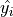
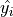
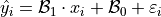

Linear Regression#
```{epigraph} Mathematicians do not study objects, but relations among objects; they are indifferent to the replacement of objects by others as long as relations do not change. Matter is not imporant, only form interests them.
In this project, we will take the techniques we have learned for bivariate data analysis and apply to them to three datasets from real life. We will examine and classify the correlation between variables and then use sample statistics to determine whether the relationship observed between the variables is significant. We will fit a Linear Regression Model to the data and use the model parameters to make predictions and extrapolations.
In order to do this, as you may have guessed, we will use Python; Python provides several functions that make bivariate analysis a quick and painless process.
Instructions#
Download all three csv datasets in the Data Sets section and place them in the
Linux Filesfolder on your folder system where you save your.pyscripts.Create a Python
.pyscript namedNAME_project_four.pyin yourLinux Filesfolder on your file system. You can do this by opening an IDLE session, creating a new file and then saving it. ReplaceNAMEwith your name.Create a docstring at the very top of the script file. Keep all written answers in this area of the script.
Read the Background section.
Read the Loading Data section.
6. Read the Bivariate Analysis section.
6. Load in the data from the .csv file using the technique outlined in the Loading Data section.
7. Perform all exercises and answer all questions in the Project section. Label your script with comments as indicated in the instructions of each problem.
8. When you are done, zip your script and the csv files in a zip file named NAME_project_four.zip
9. Upload the zip file to the Google Classroom Project Four Assignment.
Background#
Correlation#
The correlation coefficient is defined by the formula,

Notice the correlation coefficient is the average of a product of z-scores. In this formula, both the  and
and  variable are standardized and the product of each z-score is summed and then divided by
variable are standardized and the product of each z-score is summed and then divided by  to find the average. When the z-scores of the and variable are simultaneously positive or simultaneously negative, this results in a positive correlation. When the z-scores of the and variable simultaneously take on opposite signs (i.e. when one is negative, the other is positive and visa versa), this results in a negative correlation.
to find the average. When the z-scores of the and variable are simultaneously positive or simultaneously negative, this results in a positive correlation. When the z-scores of the and variable simultaneously take on opposite signs (i.e. when one is negative, the other is positive and visa versa), this results in a negative correlation.
Linear Regression Model#
The Linear Regression Model is a special statistical method for modelling the linear relationship that exists between correlated variables. A regression model (not necessarily linear) applies to a sample of bivariate data,

Where  is the total number of samples. The
is the total number of samples. The  variable is referred to as the predictor variable (or sometimes the independent variable); the
variable is referred to as the predictor variable (or sometimes the independent variable); the  variable is referred to as the response varaible (or sometimes the dependent variable). If a statistically significant linear correlation exists between the predictor and response variable, the Linear Regression Model can be used to predict a value of given a value of . The model equation for  is given by,
variable is referred to as the response varaible (or sometimes the dependent variable). If a statistically significant linear correlation exists between the predictor and response variable, the Linear Regression Model can be used to predict a value of given a value of . The model equation for  is given by,

Where the term  is a normally distributed error term centered around 0 with standard deviation equal to the mean squared error of the model,
is a normally distributed error term centered around 0 with standard deviation equal to the mean squared error of the model,

Residuals#
The error term :varepsilon_i is sometimes called a residual. The value of a residual for a given  can be found by subtracing the actual value of from the predicted value ,
can be found by subtracing the actual value of from the predicted value ,

A crucial assumption of the Linear Regression Model is the normality of the residuals. If this assumption is violated, then there is evidence to suggest the model is incomplete, i.e. there is another variable influencing the response variable. Moreover, if the normality assumption is violated, the model can no longer be used to extrapolate outside of the range of the predictor variable.
Datasets#
TODO
Old Faithful#
TODO
Spice Girls Songs#
TODO
Celebrity Twitter#
TODO
Bivariate Analysis#
Before we begin, let’s import all the appropriate libraries and create some dummy data to test out the bivariate functions Python’s statistics package has available,
import matplotlib.pyplot as mpl
import statistics as stat
# you can break long lists over multiple lines!
bivariate_data = [
(2, 1), (8, 3), (1, 1), (2, 0), (9, 4), (3, 2), (5, 3),
(1, 0), (7, 3), (6, 3), (3, 2), (0, 0), (0, 1), (8, 4),
(0, 0), (3, 1), (4, 3), (7, 3), (1, 1), (10, 6), (6, 4),
(3, 2), (7, 3), (6, 2), (9, 5), (5, 3), (1, 1), (4, 2),
(1, 0), (7, 3)
]
# note: we are creating THREE subplots!
(fig, axes) = mpl.subplots(3)
The sections that follow assume you have these lines added to the top of your script.
Scatter Plots#
A scatterplot is a very simple and easy to understand graphical representation of data. The predictor variable is plotted on the horizontal axis versus the response variable on the vertical axis. A scatterplot can be created in matplotlib using the scatter() function,
# separate x and y data
x_data = [ obs[0] for obs in bivariate_data ]
y_data = [ obs[1] for obs in bivariate_data ]
axes[0].scatter(x_data, y_data)
# label axes
mpl.title("Scatterplot Example")
axes[0].set_ylabel("y observation")
axes[0].set_xlabel("x observation")
mpl.show()
Note
The x and y variables must be split into separate lists before calling the scatter() function.
The code snippet shown above will create the following graph,
(Source code, png, hires.png, pdf)
{kind=link}
{kind=link}

Inspecting a scatterplot is often a good first step in determining whether a correlation exists between two variables. For example, the dummy data we created in the previous section has an obvious positive, linear relationship. When a linear relationship exists between variables, the correlation coefficient can be used to quantify the strength of the relationship.
Correlation#
The correlation coefficient can be easily calculated using the statistics package in Python.
Important
The correlation() function was introduced into the statistics package in version 3.10 of Python. If you are on an earlier version, the code in this section not work! Email me or talk to me after class and we will get you sorted!
The following snippet illustrates its calculation,
r = stat.correlation(x_data, y_data)
print("correlation coefficient: ", round(r, 4))
Output:
correlation coefficient: 0.9195
A correlation near 1 suggests a strong relationship. To establish statistical significance, we compare this sample and correlation coefficient against the pearson_correlation_coefficient_table. If the absolute value of the correlation coefficient is greater than the table value, we say there is a statistically significant correlation.
We will explore why we compare the sample correlation to the table in a later chapter, we start talking about Sampling Distributions and statistical_significance.
Regression Parameters#
The regression parameters,  and , can also be easily calculated using the
and , can also be easily calculated using the statistics package in Python.
Important
The linear_regression() function was introduced into the statistics package in version 3.10 of Python. If you are on an earlier version, the code in this section not work! Email me or talk to me after class and we will get you sorted!
(slope, intercept) = stat.linear_regression(x_data, y_data)
print("beta zero: ", round(slope, 4))
print("beta one: ", round(intercept,4))
- Output:
beta zero: 0.1765
beta one: 0.4706
Notice the output of the linear_regression function is an ordered pair (in Python, ordered pairs are called Tuples). The first element of the ordered pair is the slope of the Linear Regression Model, or symbolically ; the second element of the ordered pair is the intercept of the Linear Regression Model, or symbolically .
Line of Best Fit#
The Regression line can be plotted over top the scatter plot using the plot() function from matplotlib. In order to use the plot() function, we will need to create a list of data representing  . This can be done by iterating over the
. This can be done by iterating over the x_data list with Comprehension,
predicted_y = [ slope * x + intercept for x in x_data ]
Then, we pass the x_data and predicted_y list in the plot() function,
axes[0].plot(x_data, predicted_y, color="red", label="regression line")
Note you can change the color of the line and add a label to it. The label will not appear, unless the legend is shown on the graph. To display the label on a legend, you can call,
axes[0].legend()
Before calling,
mpl.show()
If you are following along, you should see the following graph when you execute your module code,
(Source code, png, hires.png, pdf)
{kind=link}
{kind=link}

Residuals#
The final step of the regression process is validating the model assumptions; in other words, we must check to make the distribution of residuals is approximately normal. In order to do this, we must first create a list containing the residuals. To create the list of residuals, we will use the Zip Function. The zip() function allows us to iterate over two list simultaneously. The following code snippet steps over the predicted_y and y_data lists at the same time, grabbing elements with the same index along the way,
residuals = [ yhat - y for (yhat, y) in zip(predicted_y, y_data) ]
Note
The order of (y_hat, y) corresponds to the order in which predicted_y and y_data are passed into the zip() function.
Once we have the list of residuals, we can create a histogram of their distribution,
axes[1].hist(residuals, density=True)
This provides a quick way of checking the normality of the residuals, but a better way is constructing a QQ Plot, as we did in the previous project. Refer to the Normality project page to review the logic behind the construction of a QQ Plot. The code is reproduced below without explanation,
residuals.sort()
res_n = len(residuals)
res_mean = stat.mean(residuals)
res_sd = stat.stdev(residuals)
standardized_res = [ (r - res_mean)/res_sd for r in residuals ]
z = stat.NormalDist(0, 1)
theoretical_per = [ z.inv_cdf((i+1)/(n+1)) for i in range(res_n) ]
After the standardized distribution and the theoretical distribution are found, they can be plotted using a scatterplot,
axes[2].scatter(standardized_res, theoretical_per)
axes[2].set_xlabel("ranked z-scores")
axes[2].set_ylabel("theoretical z-scores")
Recall a Normal distribution should have a linear QQ Plot. Any departures from linearity imply the underlying distribution is not Normal.
Project#
Old Faithful#
Scatter Plot#
Construct a scatter plot for this dataset using the Eruption Length as the predictor variable and the Waiting Time as the response variable. Ensure the graph is labelled appropriately.
In your Docstrings, describe the correlation in this dataset. Is it positive, negative or neutral? Is it linear or non-linear? Is it strong or weak?
In your Docstrings, answer the following question: Based on your answer to the previous question, would a linear regression model be a good fit for this dataset?
Correlation#
Using the Correlation function, calculate the correlation between the Eruption Length and the Waiting Time. Label the calculation with a comment and print the correlation to screen.
Calculate the total number of samples using the Length Function. Label the calculation with a comment and print the number of samples to screen.
Consult the pearson_correlation_coefficient_table and determine the critical value for a statistically significant correlation. In your Docstrings, answer the following question: Is the correlation between the Eruption Length and Waiting Time statistically significant?
Regression#
Using the Linear Regression function, calculate the model parameters for the Linear Regression Model. Label the calculations with comments and print the model coefficients to screen.
In your Docstrings, interpret the meaning of the regression parameters in terms of the variables being observed.
Using matplotlib’s
plot()function, plot the regression line on top of the scatterplot. Label the line with a python_string that contains the Linear Regression Model line of best fit. Make sure to display the legend on the graph.
Hint
Make sure the color of the regression line is set to something different than the color of the scatterplot points.
Make an extrapolation using the Linear Regression Model. Label the calculation with comments. In your Docstrings, write a sentence explaining the meaning of the calculated value.
Hint
Recall an extrapolation is when the Linear Regression Model is used to predict a value of outside of the observed range of x.
In your Docstrings, answer the following question: Based on your answer to #3 in the previous section (the one about statistical significance), should this extrapolation be used to make a prediction? Why or why not?
Residual Analysis#
Create a histogram for the distribution of residuals for the Linear Regression Model. In your Docstrings, describe the distribution residuals in a few sentence. Be sure to include descriptions of: shape, location, variation and outliers.
Create a QQ plot for the distribution of residuals for the Linear Regression Model. In your Docstrings, answer the following question: does the QQ Plot for the residuals support or contradict the model assumption of normality?
Conclusion#
Are the assumptions of the Linear Regression Model satisifed by this dataset? In other words, is the Linear Regression Model a good way of modelling the relationship between the two variables? Why or why not?
Spice Girl Song Length#
Scatter Plot#
Construct a scatter plot for this dataset using the Track Number as the predictor variable and the Song Length as the response variable. Ensure the graph is labelled appropriately.
In your Docstrings, describe the correlation in this dataset. Is it positive, negative or neutral? Is it linear or non-linear? Is it strong or weak?
In your Docstrings, answer the following question: Based on your answer to the previous question, would a linear regression model be a good fit for this dataset?
Correlation#
Using the Correlation function, calculate the correlation between the Track Number and the Song Length. Label the calculation with a comment and print the correlation to screen.
Calculate the total number of samples using the Length Function. Label the calculation with a comment and print the number of samples to screen.
Consult the pearson_correlation_coefficient_table and determine the critical value for a statistically significant correlation. In your Docstrings, answer the following question: Is the correlation between the Track Number and Song Length statistically significant?
Regression#
Using the Linear Regression function, calculate the model parameters for the Linear Regression Model. Label the calculations with comments and print the model coefficients to screen.
In your Docstrings, interpret the meaning of the regression parameters in terms of the variables being observed.
Using matplotlib’s
plot()function, plot the regression line on top of the scatterplot. Label the line with a python_string that contains the Linear Regression Model line of best fit. Make sure to display the legend on the graph.
Hint
Make sure the color of the regression line is set to something different than the color of the scatterplot points.
Make an extrapolation using the Linear Regression Model. Label the calculation with comments. In your Docstrings, write a sentence explaining the meaning of the calculated value.
Hint
Recall an extrapolation is when the Linear Regression Model is used to predict a value of outside of the observed range of x.
In your Docstrings, answer the following question: Based on your answer to #3 in the previous section (the one about statistical significance), should this extrapolation be used to make a prediction? Why or why not?
Residual Analysis#
Create a histogram for the distribution of residuals for the Linear Regression Model. In your Docstrings, describe the distribution residuals in a few sentence. Be sure to include descriptions of: shape, location, variation and outliers.
Create a QQ plot for the distribution of residuals for the Linear Regression Model. In your Docstrings, answer the following question: does the QQ Plot for the residuals support or contradict the model assumption of normality?
Conclusion#
Are the assumptions of the Linear Regression Model satisifed by this dataset? In other words, is the Linear Regression Model a good way of modelling the relationship between the two variables? Why or why not?
Celebrity Twitter#
Scatter Plot#
Construct a scatter plot for this dataset using the Tweet Count as the predictor variable and the Follower Count as the response variable. Ensure the graph is labelled appropriately.
In your Docstrings, describe the correlation in this dataset. Is it positive, negative or neutral? Is it linear or non-linear? Is it strong or weak?
In your Docstrings, answer the following question: Based on your answer to the previous question, would a linear regression model be a good fit for this dataset?
Correlation#
Using the Correlation function, calculate the correlation between the Tweet Count and the Follower Count. Label the calculation with a comment and print the correlation to screen.
Calculate the total number of samples using the Length Function. Label the calculation with a comment and print the number of samples to screen.
Consult the pearson_correlation_coefficient_table and determine the critical value for a statistically significant correlation. In your Docstrings, answer the following question: Is the correlation between the Tweet Count and Follower Count statistically significant?
Regression#
Using the Linear Regression function, calculate the model parameters for the Linear Regression Model. Label the calculations with comments and print the model coefficients to screen.
In your Docstrings, interpret the meaning of the regression parameters in terms of the variables being observed.
Using matplotlib’s
plot()function, plot the regression line on top of the scatterplot. Label the line with a python_string that contains the Linear Regression Model line of best fit. Make sure to display the legend on the graph.
Hint
Make sure the color of the regression line is set to something different than the color of the scatterplot points.
Make an extrapolation using the Linear Regression Model. Label the calculation with comments. In your Docstrings, write a sentence explaining the meaning of the calculated value.
Hint
Recall an extrapolation is when the Linear Regression Model is used to predict a value of outside of the observed range of x.
In your Docstrings, answer the following question: Based on your answer to #3 in the previous section (the one about statistical significance), should this extrapolation be used to make a prediction? Why or why not?
Residual Analysis#
Create a histogram for the distribution of residuals for the Linear Regression Model. In your Docstrings, describe the distribution residuals in a few sentence. Be sure to include descriptions of: shape, location, variation and outliers.
Create a QQ plot for the distribution of residuals for the Linear Regression Model. In your Docstrings, answer the following question: does the QQ Plot for the residuals support or contradict the model assumption of normality?
Conclusion#
Are the assumptions of the Linear Regression Model satisifed by this dataset? In other words, is the Linear Regression Model a good way of modelling the relationship between the two variables? Why or why not?
Extra Credit: Data Transformations#
One of the three datasets we have examined in this lab has a non-linear correlation. In order to fit a Linear Regression Model to this dataset, one of the variables must be transformed before the model parameters are estimated. In your Docstrings, explain which of the calculated correlation is non-linear and then answer the following question:
What type of data transformation would make the relationship between the variables linear?
Then, taking the transformation you have identified, transform the indicated dataset and re-apply the analysis we have done in this lab: create the graphical representations, perform the calculations, write the analysis and then answer the following question:
Compare the mean square error of both models. In other words, once the dataset is transformed and a model is fitted to the transformed data, what happens to the mean square error of the prediction? Label your calculations with comments.
Data Sets#
Loading Data#
The following code snippet will load in a CSV spreadsheet named example.csv, parse it into a list and then print it to screen, assuming that CSV file is saved in the same folder as your script. Modify this code snippet to fit the datasets in this lab and then use it to load in the provided datasets in Datasets section.
import csv
# read in data
with open('example.csv') as csv_file:
csv_reader = csv.reader(csv_file)
raw_data = [ row for row in csv_reader ]
# separate headers from data
headers = raw_data[0]
columns = raw_data[1:]
# grab first column from csv file and ensure it's a number (not a string)
column_1 = [ float(row[0]) for row in columns ]
print(column_1)
Celebrity Twitter#
You can download the full dataset here
The following table is a preview of the data you will be using for this project.
twitter_username |
twitter_userid |
domain |
name |
followers_count |
tweet_count |
BarackObama |
813286 |
obamabook.com |
BarackObama |
13444655 |
16467 |
justinbieber |
27260086 |
smarturl.it |
Justin Bieber |
114357427 |
31399 |
katyperry |
21447363 |
katyperry.com |
KATY PERRY |
108900656 |
11625 |
rihanna |
79293791 |
rihannanow.com |
Rihanna |
106201663 |
10630 |
Cristiano |
155659213 |
Cristiano Ronaldo |
99274403 |
3780 |
|
taylorswift13 |
17919972 |
grmypro.co |
Taylor Swift |
90373941 |
716 |
ladygaga |
14230524 |
The Countess |
84576292 |
9744 |
|
elonmusk |
44196397 |
Elon Musk |
82898543 |
17487 |
|
TheEllenShow |
15846407 |
ellentube.com |
Ellen DeGeneres |
77595645 |
23819 |
The fifth column represents the number of followers for a given Twitter user. The sixth column represents the number of tweets for a given Twitter user.
Old Faithful#
You can download the full dataset here.
The following table is a preview of the data you will be using for this project.
eruptions |
waiting |
3.6 |
79 |
1.8 |
54 |
3.333 |
74 |
2.283 |
62 |
4.533 |
85 |
2.883 |
55 |
4.7 |
88 |
3.6 |
85 |
1.95 |
51 |
4.35 |
85 |
1.833 |
54 |
3.917 |
84 |
4.2 |
78 |
1.75 |
47 |
4.7 |
83 |
2.167 |
52 |
The first column represents the length of the eruption in minutes. The second column represents the waiting time in minutes until the next eruption.
Spice Girls Song Length#
You can download the full dataset here.
The following table is the a preview of the data you will be using for this project.
album_release_date |
album_release_year |
duration_ms |
track_name |
track_number |
album_name |
key_name |
mode_name |
key_mode |
2000-01-01 |
2000 |
255866 |
Holler |
1 |
Forever |
A# |
minor |
A# minor |
2000-01-01 |
2000 |
254666 |
Tell Me Why |
2 |
Forever |
F |
minor |
F minor |
2000-01-01 |
2000 |
298293 |
Let Love Lead The Way |
3 |
Forever |
B |
major |
B major |
2000-01-01 |
2000 |
251000 |
Right Back At Ya |
4 |
Forever |
G# |
major |
G# major |
2000-01-01 |
2000 |
226266 |
Get Down With Me |
5 |
Forever |
C# |
minor |
C# minor |
2000-01-01 |
2000 |
254773 |
Wasting My Time |
6 |
Forever |
F |
minor |
F minor |
The third column represents the song length in milliseconds. The fifth column represents the track number of the song on the studio album on which it was released.